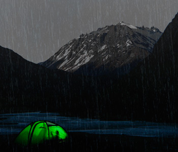

Recomendaciones por si te llueve durante el campamento
La aventura bajo el agua puede ser una gran experiencia es obvio que no es lo ideal o no es lo que te imaginas al salir de campamento,
hay varios factores a considerar si el lugar en donde quieres acampar es húmedo, o simplemente si es
temporada de lluvia. Te damos algunas recomendaciones para que la lluvia no te detenga en tu aventura
Haz que tu tienda sea resistente al agua
Si tu tienda no es resistente al agua, lleva alguna carpa o lona impermeable
más grande que tu tienda para ponerla sobre ella y átala bien, usa estacas para asegurarla
Lleva ropa resistente al agua.
Ya sea que lleves una muda de ropa adicional por precaución o tal vez sea lo que lleves puesto.
Lo ideal será que estén hechas de fibras sintéticas de secado rápido, como el nylon.
Come sin cocinar
Lleva alimentos que no requieran que los cocines. Las carnes frias, las barras energéticas y la fruta deshidratada serán algunos bocadillos adecuados para sobrellevar las lluvias.
Los ingredientes para sándwich (como el pan y jamon) también funcionarán.
Lleva un impermeable o un poncho
Si saldrás de la tienda, tendrás que usar una capa externa de ropa resistente al agua. Los ponchos son una opción grandiosa si vas a caminar por el campamento. Si vas a estar en la lluvia
por mucho tiempo o cerca de cuerpos de agua, deberás usar algún abrigo que repela el agua y te mantenga cálido.
Lugares boscosos para Acampar
Haz clic en las imágenes para descubrir el lugar
Puedes buscar más lugares en google